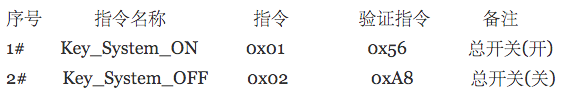

随说 : 本文结合自己做的这个项目来整理开发思路,这一篇着重 <蓝牙> 交互模块的
前期准备 :
- 硬件商家提供的电路板
- 硬件商家提供的电路板通讯协议
一、看懂通讯协议
我模拟了一份通讯协议的资料,凑合着看吧
当然,实际情况的指令会多的多

序号 : 指令的序号(没啥意义)
指令名称 : 就是给指令定义一个名字,一般可以作为储存 本地的Key
指令 : 实际操作电脑版接收的数据
验证指令 : 根据一个验证算法得出的数据.
备注 : 告诉你这个是干嘛的.
二、开始连接
将电路板通电,然后它就处于可被检测状态.
作为App来说,首先需要检测iphone是否处于蓝牙开启状态
2.1、创建Central管理器
// 创建Central管理器,这里我弄成单例
+(LinBlueToothEngine *)shareInstance
{
static dispatch_once_t pred = 0;
__strong static LinBlueToothEngine *_sharedObject = nil;
dispatch_once(&pred, ^{
_sharedObject = [[LinBlueToothEngine alloc] init];
});
return _sharedObject;
}
2.2、检测蓝牙状态
// 当创建Central管理器成功后,系统会自动调用该方法
// 该方法的作用是检测蓝牙开启状态
- (void)centralManagerDidUpdateState:(CBCentralManager *)central
{
// 具体又几种状态的,这里忽略
switch ([central state])
{
case CBCentralManagerStatePoweredOn:
_state = @"正常打开了";
_bluetoothPowerOn = YES;
// 注意这句, 调用CoreBluetooth框架 CBCentralManager类的
//scanForPeripheralsWithServices: options: 方法
[self.centralManager scanForPeripheralsWithServices:nil options:nil];
break;
case CBCentralManagerStateUnknown:
default:
;
}
NSLog(@"蓝牙此时状态: %@", _state);
}
2.3、确保蓝牙打开,才能扫描设备,扫描设备方法,在这里过滤你想连接的设备
//搜索成功的回调
- (void)centralManager:(CBCentralManager *)central didDiscoverPeripheral:(CBPeripheral *)peripheral advertisementData:(NSDictionary *)advertisementData RSSI:(NSNumber *)RSSI{
//BLUETOOTH_DEVICE_NAME 为设备名的宏定义
if ([peripheral.name isEqualToString:BLUETOOTH_DEVICE_NAME]) {
// 保存peripheral
self.deviceModel.peripheral = peripheral;
//执行搜索成功的block
!self.scanningToAroundYES ? : self.scanningToAroundYES(peripheral.name);
}
}
2.4、这里主要注意, connectPeripheral: options:方法, 是连接蓝牙的方法
//连接蓝牙设备
-(void)startconnectService{
[self.centralManager connectPeripheral:self.deviceModel.peripheral options:@{CBConnectPeripheralOptionNotifyOnConnectionKey :@YES}];
}
2.5、连接成功,失败都又相应的回调方法,下面列出的时当成功连接的时候方法
//外设连接成功
- (void)centralManager:(CBCentralManager *)central didConnectPeripheral:(CBPeripheral *)peripheral{
if ([peripheral.name isEqualToString:BLUETOOTH_DEVICE_NAME]) {
if (peripheral == self.deviceModel.peripheral) {
self.deviceModel.peripheral.delegate = self;
[self.deviceModel.peripheral discoverServices:nil];
}
}
}
2.6、当peripheral找到service之后, 就会就回调用peripheral: didDiscoverServices:
//发现外设的service
- (void)peripheral:(CBPeripheral *)peripheral didDiscoverServices:(NSError *)error{
if (error){
!self.connentionFailure ? :self.connentionFailure();
return;
}
if ([peripheral.name isEqualToString:BLUETOOTH_DEVICE_NAME]){
for (CBService *service in peripheral.services){
if ([service.UUID isEqual:[CBUUID UUIDWithString:BLUETOOTH_CBUUID]]){
[peripheral discoverCharacteristics:nil forService:service];
}
}
}
}
2.7、当然,寻找 characteristics 也有成功与失败的回调方法, 下面列出的时当发现characteristics时候的方法
//// 外设发现service的特征
- (void)peripheral:(CBPeripheral *)peripheral didDiscoverCharacteristicsForService:(CBService *)service error:(NSError *)error{
if (error) {
return;
}
if ([peripheral.name isEqualToString:BLUETOOTH_DEVICE_NAME]){
if (peripheral == self.deviceModel.peripheral) {
for (CBCharacteristic *characteristic in service.characteristics) {
if ([characteristic.UUID isEqual:[CBUUID UUIDWithString:WRITE_CHARACTERISTIC]]) {
NSLog(@"写入特征");
self.deviceModel.characteristcs = characteristic;
}else if ([characteristic.UUID isEqual:[CBUUID UUIDWithString:READ_CHARACTERISTIC]]){
NSLog(@"通知特征");
[self.deviceModel.peripheral setNotifyValue:YES forCharacteristic:characteristic];
}
}
}
!self.connectionSuccess ? : self.connectionSuccess ();
}
}
2.8、connectionSuccess 这个block 连接之后
//设备连接成功的Block
[self.blueToothEngine setConnectionSuccess:^{
weakSelf.infoLabel.text = @"连接成功";
NSLog(@"设备已连接");
}];
3、传输数据
characteristic 有几种属性
Read : 只读
Write Without Response : 写数据不接收回执
Write : 只写
Notify : 通知(不需要对方回复)
Indicate : 通知(需要回复)
这个项目中,只用到了write 与 notify
发送指令
- (IBAction)sendCommand:(id)sender {
NSString *command = @"02******";
//将16进制的字符串转16位Data
NSData *data = [command stringHexToBytesData];
[self.blueToothEngine sendWriteData:data];
}
- (void)sendWriteData:(NSData *)data{
[self.deviceModel.peripheral writeValue:data forCharacteristic:self.deviceModel.characteristcs type:CBCharacteristicWriteWithResponse];
}
接收电路板回来的信息
- (void)peripheral:(CBPeripheral *)peripheral didUpdateValueForCharacteristic:(CBCharacteristic *)characteristic error:(NSError *)error{
if (error) {
return;
}
if ([peripheral.name isEqualToString:BLUETOOTH_DEVICE_NAME]) {
if (peripheral == self.deviceModel.peripheral) {
//解析数据
NSString * resultString = [[NSString stringWithHexData:characteristic.value] stringUpperCase];
//将数据返回页面
!self.dataReportingBluetooth ? : self.dataReportingBluetooth(resultString);
}
}
}